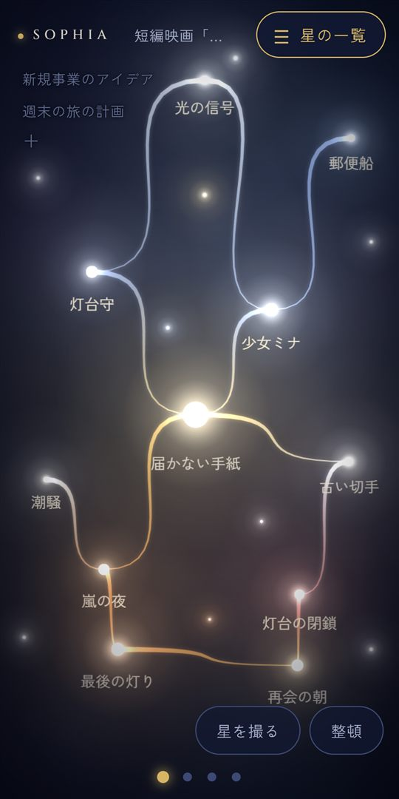

マインドマップが続かない人へ
枠を埋めない「星座」型の思考整理
「頭を整理するならマインドマップ」と聞いて試してみたものの、真ん中にテーマを書いたところで手が止まった。何枚か描いたけれど、いつの間にか使わなくなった。そんな経験はないでしょうか。続かないのは、あなたの根気のせいではないかもしれません。
マインドマップが続かない4つの理由
1. 最初に「中心のテーマ」を決めないといけない
マインドマップは、真ん中のテーマから枝を広げていく形です。でも、頭がもやもやしているときほど、「何がテーマなのか」がまだわかっていません。最初の一歩でつまずきやすいのです。
2. どの枝に入れるか、毎回考える
ひとつ思いつくたびに、「これはどの枝の下？」と分類を考えることになります。思いつく速さに、分類が追いつきません。
3. 空いた枠が気になる
枝の先が空いていると、何か書かなければいけない気がしてきます。埋めること自体が目的になり、だんだん疲れてしまいます。
4. 見返したくなる形になりにくい
書き終えたマップは情報がぎっしりで、あとから開いても、どこから読めばいいかわかりません。次に使う場面がないと、続ける理由もなくなります。
考えは「木」の形では出てこない
マインドマップは、テーマを上から順に分解していく「木」の形です。決まったテーマを細かくするには、とても便利な方法です。
ただ、ふだんの思いつきは、そんなふうに順番どおりには出てきません。関係なさそうな考えがぽつぽつと浮かび、あとから「あ、これとこれはつながっている」と気づく。考えは、木よりも「星空」に近い形で出てくることが多いのです。
「点」が先、「線」はあと──星座型の整理
そこでおすすめしたいのが、星座をつくるように整理する方法です。
- 先に点を出す：思いついたことを、ひとつずつ「点」として置いていく。良い悪いも、順番も、分類も考えない
- あとから線を引く：点を眺めて、つながりに気づいたところだけ線で結ぶ。つながらない点は、そのままで大丈夫
- 線をたどる：線をたどった順番が、そのまま話の流れや構成になる
中心のテーマを先に決める必要はありません。点を並べていくうちに、「本当に考えたかったこと」が星座の形で見えてきます。空いた枠もないので、「埋めなければ」という負担もありません。
マインドマップとの使い分け
| マインドマップ | 星座型の整理 | |
|---|---|---|
| 始め方 | 中心のテーマを決めてから | 思いついたことから、すぐ |
| 得意な場面 | 決まったテーマを細かく分解する | もやもやした考えから、テーマや流れを見つける |
| 形 | 木（階層） | 星座（点と線） |
| 最後の形 | 全体の地図 | 線をたどった順番が、そのまま構成になる |
どちらが優れているというより、テーマが決まっているならマインドマップ、まだもやもやしているなら星座型と、場面で使い分けるのがおすすめです。
SOPHIA で星座型の整理を試す（3分）
SOPHIA（ソフィア）は、この「点が先、線はあと」の整理を、そのまま指先でできるアプリです。

- 画面をダブルタップして、思いついたことを星にする。名前はあとからで大丈夫です
- 星を5つほど置いたら、眺めてみる
- つながりそうな星を、指でなぞってつなぐ
- 「要約」を押すと、つないだ順に文章として並びます
体験版は無料で、星10個まで使えます。ログインも不要なので、まずは今頭にあることを、10個の星にしてみてください。
まとめ
- マインドマップが続かないのは、「最初にテーマを決める」「枝に分類する」「枠を埋める」が負担になりやすいから
- 考えは「木」より「星空」の形で出てくる。点を先に出して、線はあとから引く
- テーマが決まっていればマインドマップ、もやもやしていれば星座型と使い分ける